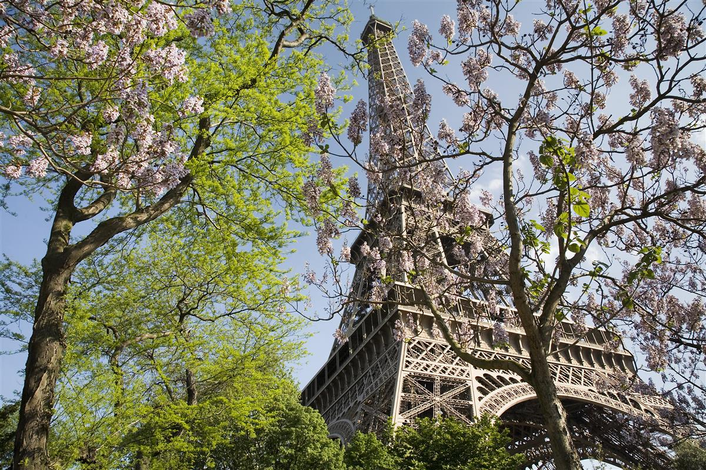
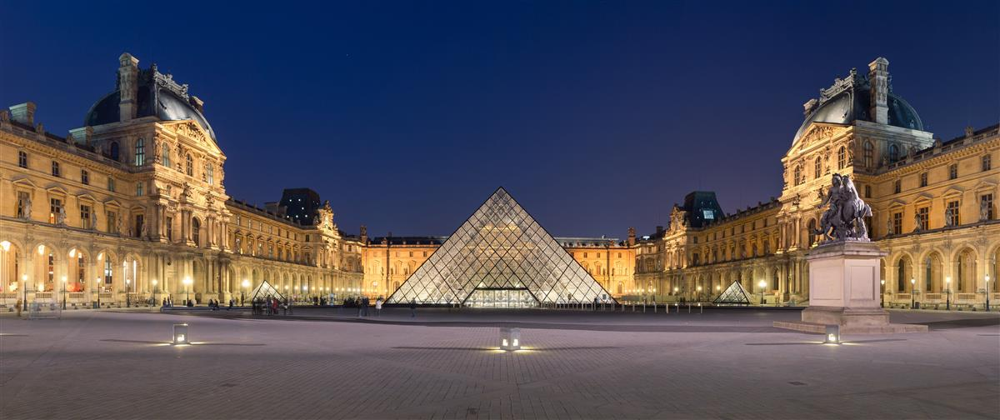
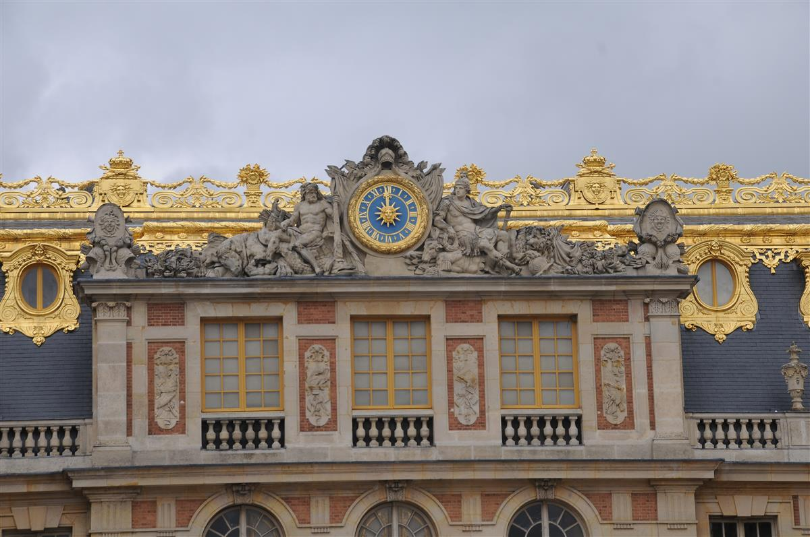
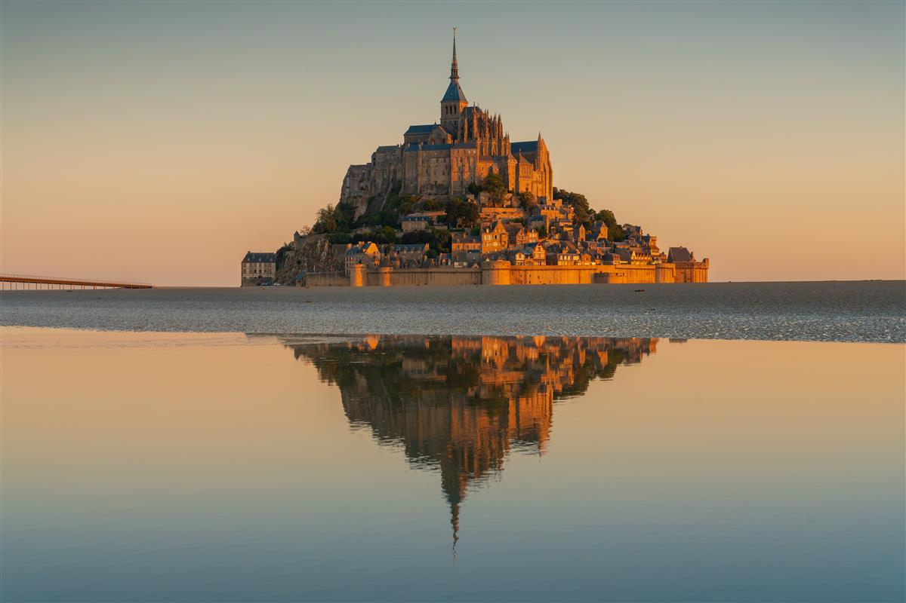
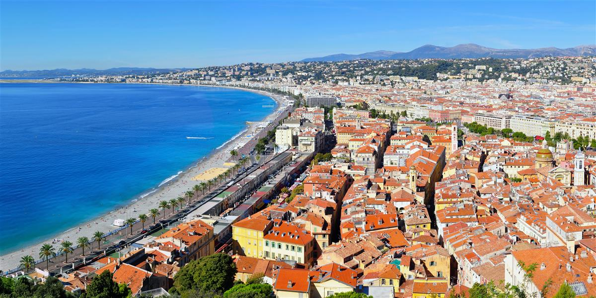
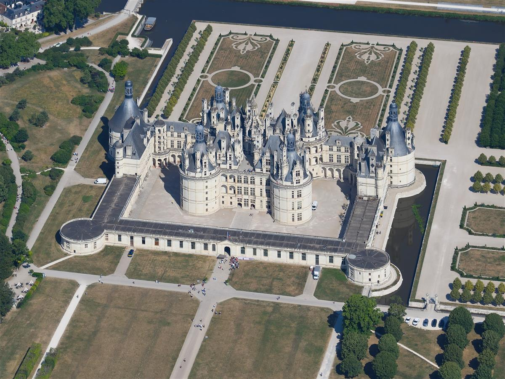
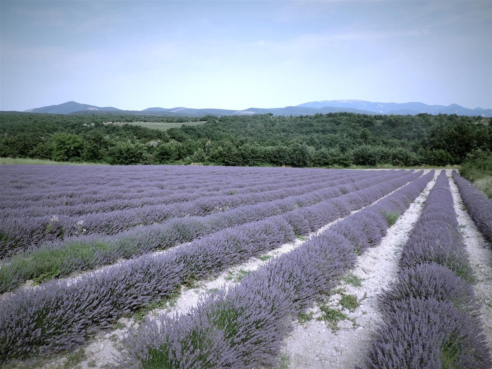
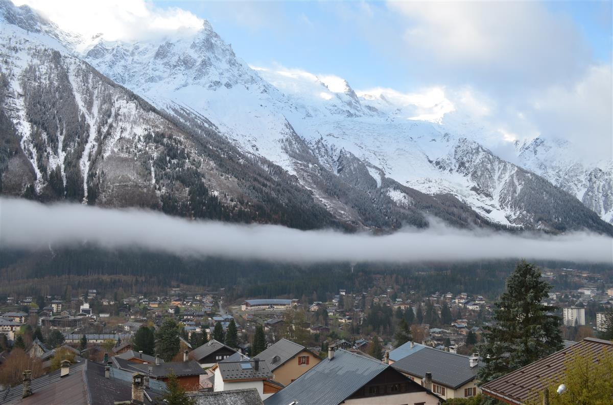

France is more than just a destination; it is a symphony of art, a treasury of history, and a masterclass in the art of living. From the legendary boulevards of Paris to the sun-drenched coastal villages of the Mediterranean, this is a country that has spent centuries perfecting the balance between grandeur and intimacy. Whether you are drawn by the haunting beauty of a medieval abbey rising from the sea or the adrenaline-fueled peaks of the high Alps, France offers a depth of experience that caters to every sensibility. This guide explores 8 iconic locations that form the heart of the French identity, inviting you to savor each moment with the "joie de vivre" that the country is so famous for.

Rising 330 meters above the Champ de Mars, the Eiffel Tower is the undisputed symbol of France and one of the most recognized structures in the world. Yet, it was not always the beloved icon it is today. When Gustave Eiffel completed this monumental iron lattice tower for the 1889 World's Fair, it was met with fierce criticism from the Parisian elite, who termed it a "ghastly iron monster." Today, it is impossible to imagine the Parisian skyline without its graceful, tapering silhouette, which has become a beacon of romance and engineering triumph.
The tower's three distinct levels offer a progression of perspectives on the "City of Light." The first floor features a thrilling glass floor that allows you to walk "in the air" above the heads of those queuing below. The second floor is widely considered the best vantage point for photography, providing a clear view of the Seine, the Arc de Triomphe, and the distant Sacré-Cœur. For those who reach the very top, the experience is crowned by a visit to the champagne bar, where you can toast to your visit at the highest point in Paris.

The Louvre is not merely a museum; it is a colossal palace of history that spans nearly 800 years of French architectural evolution. Once a fortress and later a royal residence, it was transformed into a museum during the French Revolution and now stands as the largest art museum on the planet. Its collections are so vast that it is estimated that even if you spent only thirty seconds looking at each piece, it would take you over a hundred days to see everything on display.
While the Mona Lisa is the museum's most famous resident, the Louvre's true power lies in its diversity. Across its three wings—Denon, Richelieu, and Sully—you can wander from the colossal statues of ancient Mesopotamia to the opulent apartments of Napoleon III, which shimmer with gilded carvings and crystal chandeliers. The iconic Glass Pyramid, designed by I.M. Pei, serves as a modern portal into this ancient world, reflecting the sky and the surrounding Renaissance facades in a perfect harmony of old and new.

The Palace of Versailles stands as the ultimate expression of absolute monarchy and late-French Baroque art. Originally a modest hunting lodge, it was transformed by King Louis XIV, the "Sun King," into the most magnificent court in Europe. At its height, the palace could house over 10,000 members of the nobility and court staff, serving as the political and social center of the French kingdom until the Revolution in 1789.
The interior of the palace is a testament to the opulence of the era. The Hall of Mirrors (Galerie des Glaces) remains the most iconic room, its seventeen arched mirrors reflecting the gardens through seventeen matching windows. It was here that royal ceremonies were held, and later, where the Treaty of Versailles was signed to end World War I. Beyond the main palace, the estate includes the Grand Trianon and the Petit Trianon, the latter being the private refuge of Marie Antoinette, where she famously retreated to her rustic "Hameau de la Reine" to escape the rigors of court life.

Emerging from the churning tidal waters of Normandy like a medieval mirage, Mont Saint-Michel is one of the most breathtaking sights in Europe. This rocky island is crowned by a Benedictine abbey that has been a major pilgrimage destination for Christian faithful for over a thousand years. The island's silhouette, with its spiraling village and towering gothic spire, seems to defy the laws of gravity and the sea, earning it its nickname, "The Wonder of the West."
Walking up the "Grande Rue," the main narrow street that winds its way up to the abbey, is like stepping back into the 15th century. Timber-framed houses lean over the cobblestones, now housing shops and restaurants that have served travelers for generations. At the summit, the abbey itself is a masterpiece of architectural layering, combining Romanesque naves with flamboyant Gothic cloisters that offer panoramic views across the bay where the sky and sea seem to merge into one.

The Côte d'Azur, or French Riviera, has long been the gold standard for Mediterranean luxury and elegance. Stretching from the Italian border to Saint-Tropez, this sun-drenched coastline is a world of azure waters, palm-fringed boulevards, and hilltop villages that have inspired artists from Picasso to Matisse. Whether you are walking the "Promenade des Anglais" in Nice or watching the super-yachts in the harbor of Cannes, the Riviera exudes a feeling of effortless "chic" that is unique to southern France.

Often referred to as the "Garden of France," the Loire Valley is a land of rolling emerald hills, lush vineyards, and over 300 stunning châteaux. During the French Renaissance, the valley became the favored playground of kings and nobles, who competed to build the most ornate and innovative palaces along the banks of the Loire River. Today, it is a UNESCO World Heritage site and a breathtaking reminder of a time when central France was the heart of the artistic and political world.

Provence is a region that engages every one of your senses. Located in southeastern France, it is a land of olive groves, ancient Roman ruins, and those legendary fields of lavender that turn the landscape into a sea of vibrant purple every summer. The light in Provence is remarkably clear and warm, a quality that famously drew Vincent van Gogh to Arles, where he produced some of his most legendary masterpieces. It is a place where time seems to slow down, dictated by the rhythm of the village markets and the late-afternoon game of "pétanque" in the dusty square.

Chamonix-Mont-Blanc is more than just a ski resort; it is the historic capital of alpinism and the gateway to the highest peaks in Western Europe. Nestled at the base of the massive Mont Blanc (4,810m), this vibrant town has been attracting adventurers since the mid-18th century. Surrounded by jagged granite spires and blue-tinged glaciers, the landscape here is one of raw, untamed power that commands respect and awe in equal measure.
The Endless Allure of France: France is a country that never ceases to surprise and delight. From the first glimpse of the sparkling Eiffel Tower to the final sunset over the lavender fields of Provence, every journey here is a collection of memories waiting to be made. We hope this guide inspires you to cross the channel or the ocean and discover the infinite magic of France for yourself. Bon voyage!
Every destination and accommodation is hand-selected to meet the highest standards of luxury.
Book directly with verified premium providers to ensure the best rates and exclusive perks.
Our worldwide presence ensures you have premium support wherever your journey takes you.
"Luxe Voyages didn't just book a trip; they crafted an unforgettable experience. Every detail was handled with unparalleled professionalism."